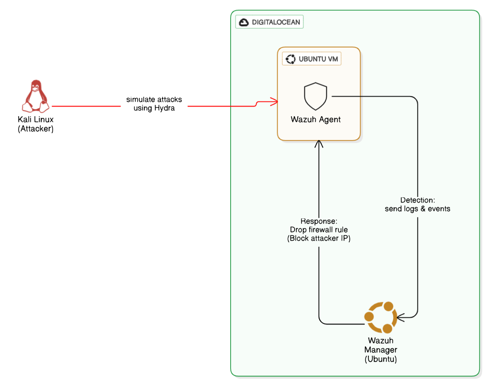

Intrusion Detection & Active Threat Response with Wazuh
This project establishes an automated security monitoring and active response pipeline. The core workflow begins with a Kali Linux Attacker machine launching a brute-force attack using Hydra against a monitored Ubuntu Agent VM.
The Wazuh agent on the Ubuntu server detects this hostile activity, collects the relevant logs, and forwards them to the central Wazuh Manager. Upon analyzing the data and identifying the signature of the brute-force attack, the manager triggers an active response, automatically deploying a new firewall rule on the agent to block the attacker's IP address and neutralize the threat.
Lab Overview
Utilities Used:
- DigitalOcean - 2x Ubuntu 24.04 Droplets
- VMWare - Kali VM
- Termius - for SSH session mgmt
Setting up Wazuh Manager
Install Wazuh Manager
We start by installing the manager on our primary Ubuntu Droplet using the official installation script:
curl -sO https://packages.wazuh.com/<latest>/wazuh-install.sh && sudo bash ./wazuh-install.sh -aCopy the username and password generated at the end of the installation. If you forgot to save the password, you can recover it with this command:
sudo tar -O -xvf wazuh-install-files.tar wazuh-install-files/wazuh-passwords.txtAfter installation, ensure the firewall allows traffic on port 443 and verify the service status:
ufw allow 443
systemctl status wazuh-manager.serviceOnce running, we can log in to the Wazuh dashboard.


Setup Wazuh Agent on Ubuntu
For the Linux victim machine, we select the DEB amd64 version and run the installation commands.


Start the agent and check its status:
sudo systemctl daemon-reload
sudo systemctl enable wazuh-agent
sudo systemctl start wazuh-agent
sudo systemctl status wazuh-agent
Configure Ubuntu Agent & Active Response
Agent Configuration
Ensure the agent config points to the correct Manager IP by editing /var/ossec/etc/ossec.conf.
nano /var/ossec/etc/ossec.conf
Adding Active Response Rule
We configure the Wazuh Manager to trigger a firewall drop when a specific rule ID (5710 - SSHD brute force) is fired. This is done in the manager's ossec.conf.
<active-response>
<command>firewall-drop</command>
<location>local</location>
<rules_id>5710</rules_id>
<timeout>600</timeout>
</active-response>
PoC [Proof-of-Concept]
To test the defense, I used Hydra (downloadable from GitHub) on a Kali Linux machine to perform an SSH brute-force attack against the Ubuntu agent.
1. Initial Connectivity
First, verify we can ping the target before the attack.
ping <ubuntu vm public ip>
2. Execute Brute-Force Attack
Run Hydra using the rockyou.txt wordlist.
sudo hydra -l root -P /usr/share/wordlists/rockyou.txt ssh://139.59.126.244
3. Verify Active Response
After the attack starts, try pinging the VM again. It should fail (timeout) because the firewall rule has been automatically applied.

4. Wazuh Logs
The Wazuh dashboard confirms the events: SSHd failed login attempts followed by the Host firewall-drop active response.


Challenges & Lessons Learned
Setting up Active Response is powerful but requires careful tuning. During this lab, I encountered a few interesting hurdles:
- Timeout Configuration: I initially set the
<timeout>to a very short duration for testing. This made it hard to verify if the block was actually working because the IP would get unbanned before I could switch windows to ping it. Increasing it to 600 seconds (10 minutes) gave me ample time to verify the block. - Agent Connectivity: My Ubuntu agent initially refused to connect to the manager. It turned out that the DigitalOcean droplet firewall was blocking port 1514 by default. I had to explicitly allow this port on the cloud provider's firewall dashboard, not just inside the OS with UFW.
- Rule ID Specificity: Choosing the right
rules_idfor the active response is critical. If you pick a generic rule (like "authentication failed"), you might accidentally lock out legitimate users who mistype their password once. Targeting Rule 5710 (multiple failed attempts) ensures we only punish brute-force behavior.